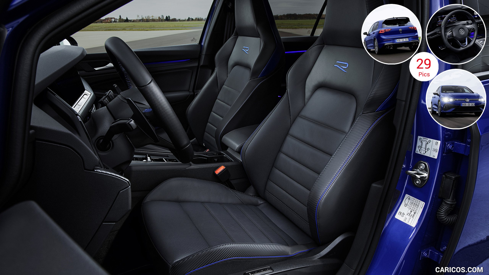
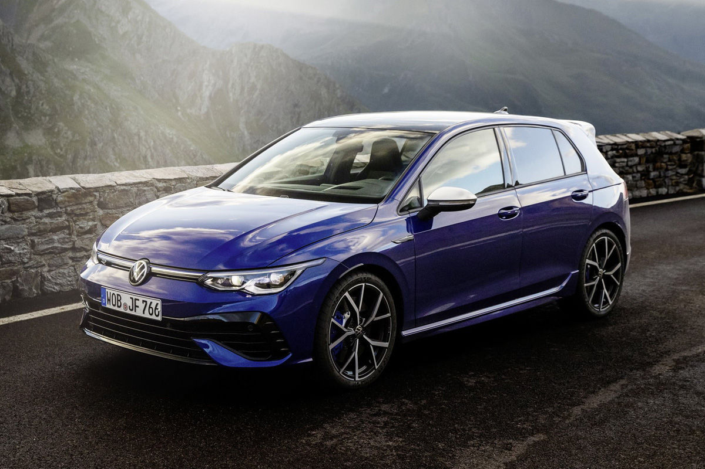

BMW X6
Price: R 1 530 800.00
Uncompromisingly non-conformist – the BMW X6 stands for provocative self-assertiveness. Above all, this is visible in the extremely athletic body of the vehicle along with the new, distinctive design language, which is displayed by the supreme exclusivity and visionary technologies such as the impressive BMW kidney grilled ‘Iconic Glow’. All of this primarily points to one thing: absolute dominance, which the BMW X6 demonstrates quite matter-of-factly on every route thanks to a powerful engine, precise suspension and features such as the xOffroad package. Experience a previously unseen new way of exceeding expectations with the BMW X6.
BMW X6 M50i:Fuel consumption in l/100 km (combined): 10.7–10.4 CO2 emissions in g/km (combined): 243–237


Mercedes-AMG G63
Price: R3 086 653.00
The 2021 Mercedes-AMG G63 is all about making things seem effortless, whether that's blasting down the autobahn with the speedometer in the triple digits or crawling rocks in Moab at single-digit speeds. It also will undoubtedly make your valet experience effortless as those guys are sure to leave your truck up front. This modernized version of the iconic original G-class has all of AMG's go-fast bits and baubles, including a 577-hp twin-turbo V-8 engine under its squared-off hood. Inside, a host of contemporary infotainment and tech features is at your fingertips and your behind is perched on a leather-wrapped throne with just the right amount of bolstering to keep you upright during any of the G63's off-road antics. Living so effortlessly comes at a price, but if you're rich enough to afford one, the G63 is worth the investment.

Audi RS3
Price: R1 300000.00
This is the third generation of Audi’s RS3 megahatch, and the second-generation of the saloon variant (which incidentally holds the Nurburgring record for compact cars, if that floats your boat). The same general ingredients which involve the excellent use of a 2.5-litre five-cylinder turbocharged petrol engine driving through quattro all-wheel drive. At first, it looks like a bit of a massage - no more power, slightly more torque - with both more accessible than before, but that might be to sell the new version somewhat short, so more on that in a minute. There are bigger intakes, wider tracks and boxy arches. The car itself is marginally longer, wider and taller than the previous RS3 Sportback, but with the same wheelbase, and comes equipped with less luggage space (by about 50-litres). The big news is some of the other changes that really make a difference. All cars in the UK get adaptive damping, plus what Audi calls the ‘RS torque splitter’ to distribute a maximum of 50 per cent of available torque between the two rear wheels. There are optional ceramic brakes (which save 10kg), an optional RS exhaust - standard on some models - and a new mVDC (vehicle dynamics controller) which should allow for better/faster integration of the chassis systems. Oh, and configurable lights on some models (LEDs are standard) that can spell out ‘R… S… 3’ and then a chequered flag in 8-bit when you approach the car.


VW GOLF 8 RLINE
Price: R1 100000.00
Volkswagen in Europe has detailed the optional “R Performance Package” for its new 235 kW Golf 8 R. Interestingly, the new “drift” mode forms part of the optional pack, which means buyers will have to tick the extra-cost box to unlock the ability to easily send the all-paw hot hatch into oversteer. In addition, specifying the R Performance Package sees the Golf R’s top speed raised from 250 km/h to 270 km/h. The kit furthermore includes a larger, more prominent rear spoiler (for “extra downforce on the rear axle”, says VW) and 19-inch “Estoril” alloy wheels (an inch larger than the standard items). In fact, both the “drift” and “special” driving modes are effectively optional, while “comfort”, “sport”, “race” and “individual” settings ship standard. As a reminder, the Golf 8 R’s new 4Motion system incorporates rear-axle torque vectoring via a rear differential with two multiplate clutches. In “drift” mode (for use “away from public roads”, according to the Wolfsburg-based firm), maximum torque is available on the wheel located on the outside of the bend, while the electronic stability control is automatically set to “sport”. With “special” mode selected, meanwhile, all of the main drive system parameters are “configured” for the Nürburgring Nordschleife, resulting in a 17-second quicker time for the DSG model in “internal tests”. In both modes, VW says the gearbox calibration has been “optimised” in order to keep the revs “consistently high”. In addition, for the “first time since the introduction of the DSG”, the transmission will remain in manual mode (in “drift” or “special” drive modes, that is) if the driver has selected this. For the record, the halo Golf offers 235 kW and 420 N.m (the latter from 2 100 to 5 350 r/min) from its familiar EA888 turbocharged 2,0-litre, four-cylinder petrol engine, delivered to all four wheels via a seven-speed dual-clutch transmission. According to the Wolfsburg-based company, that’s enough for a sprint from zero to 100 km/h in 4,7 seconds.
 
Jaguar F-Pace
Price: R1 1 835 700.00
The F-Pace is both Jaguar’s global sales king and the fastest-selling model in the company’s history. It’s shifted 48,744 units in the UK and more than a quarter of a million globally since arriving in 2016. Odd to think that at one point in time a Jaguar SUV was considered a gamble for a brand so heavily oriented around sports cars and sporting saloons. Imagine if they hadn’t launched it… Anyway, 2021 heralds a major mid-life refresh, mostly concerned with addressing the underwhelming interior and user interface, and rolling out a line-up of new engines. Chief amongst these is a 2.0-litre four-cylinder petrol plug-in hybrid, badged P400e, which makes a total of 398bhp – 141bhp of that ponied up by an electric motor fuelled by a 17.1 kWh lithium ion battery – and 472 torques, for a claimed 33 miles of electric-only driving and ‘up to’ 130.2 mpg. Aside from the entry-level 2.0-litre, 247bhp four-cylinder turbo petrol, all of the six available engines are mildly electrified (MHEVs, if you insist). There are three diesels, ranging from a 161bhp 2.0-litre four-cylinder to a 296bhp 3.0-litre six-cylinder, and three petrols in all, including the PHEV. Just to be clear, the F-Pace we’re testing here is the P400 petrol, powered by a new 395bhp, in-line six-cylinder that uses an electric supercharger supported by a twin scroll turbo. Gone is the option of a manual gearbox. Gone, too, is an entry-level rear-drive only iteration. All F-Paces are now all-wheel drive and use the ZF eight-speed automatic. But lest you think Jaguar is letting its sporting credentials slip, it points to its Intelligent Driveline Dynamics which optimises the chassis’ rear-driveiness in most conditions. The exterior makeover is subtle but does several crucial things: makes the car look wider, better planted and less top-heavy. The newly sculpted bonnet stretches further to the top of the grille, eliminating unsightly shutlines, while the grille itself has a new mesh design with diamond detailing and what Jaguar calls ‘noble chrome’ finish. There are new bumpers, wider air intakes, and new slimmer (by 10mm) quad LED headlights that feature the company’s ‘double J’ motif. Similar face-lifty stuff has gone on at the rear, with a new lower bumper and tail-lights akin to the ones on the I-Pace
Ford Ranger Raptor
Price: R965 300.00
Bi-Turbo Engine with 10-Speed Auto Transmission Built to battle the toughest terrain, the Ranger Raptor incorporates the latest Ford powertrain technology and sets a performance standard. Carefully calibrated with Ford’s 10-speed auto transmission technology, the cutting-edge bi-turbo engine delivers more top-end power, more bottom-end torque, improved acceleration, and quicker gear changes.